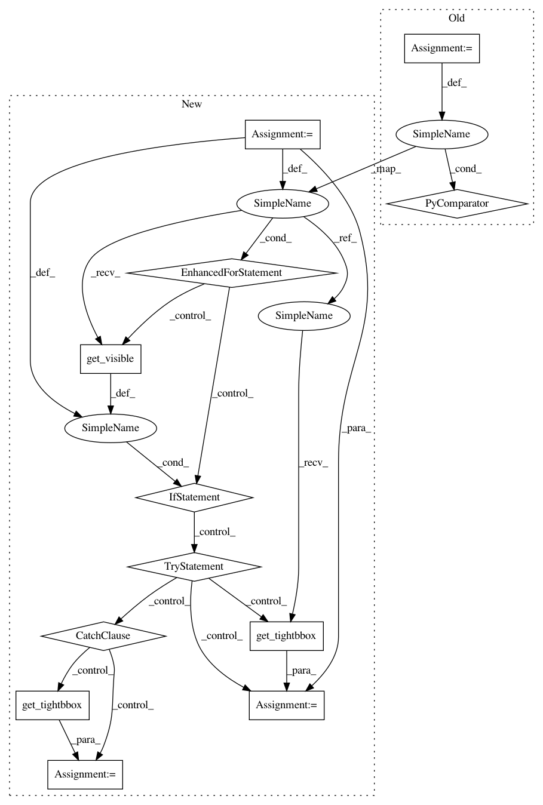

474a90c50a75b5dbffa6b018ebc0a3a26f689649,lib/matplotlib/tight_layout.py,,auto_adjust_subplotpars,#Any#Any#Any#Any#Any#Any#Any#Any#Any#Any#,19
Before Change
continue
tight_bbox_raw = Bbox.union([
ax.get_tightbbox(renderer) for ax in subplots if ax.get_visible()])
tight_bbox = TransformedBbox(tight_bbox_raw,
fig.transFigure.inverted())
After Change
continue
bb = []
for ax in subplots:
if ax.get_visible():
try:
bb += [ax.get_tightbbox(renderer, for_layout_only=True)]
except TypeError:
bb += [ax.get_tightbbox(renderer)]
tight_bbox_raw = Bbox.union(bb)
tight_bbox = TransformedBbox(tight_bbox_raw,
fig.transFigure.inverted())
In pattern: SUPERPATTERN
Frequency: 3
Non-data size: 12
Instances
Project Name: matplotlib/matplotlib
Commit Name: 474a90c50a75b5dbffa6b018ebc0a3a26f689649
Time: 2020-04-30
Author: jklymak@gmail.com
File Name: lib/matplotlib/tight_layout.py
Class Name:
Method Name: auto_adjust_subplotpars
Project Name: matplotlib/matplotlib
Commit Name: 6af745055995bdb2891470a0f030cf481035dcc9
Time: 2018-10-28
Author: jklymak@gmail.com
File Name: lib/matplotlib/figure.py
Class Name: Figure
Method Name: get_tightbbox
Project Name: matplotlib/matplotlib
Commit Name: 474a90c50a75b5dbffa6b018ebc0a3a26f689649
Time: 2020-04-30
Author: jklymak@gmail.com
File Name: lib/matplotlib/tight_layout.py
Class Name:
Method Name: auto_adjust_subplotpars
Project Name: matplotlib/matplotlib
Commit Name: 7c2b45d962bcf8eda85329b8ce52796a4d9257fc
Time: 2018-10-28
Author: jklymak@gmail.com
File Name: lib/matplotlib/figure.py
Class Name: Figure
Method Name: get_tightbbox